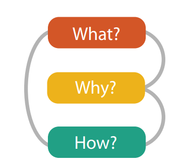
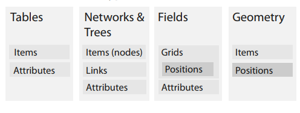
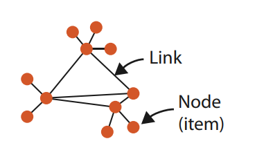
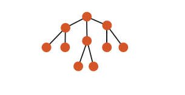

Vizualizacija podataka
Predavanje 02
Apstrakcija podataka
- Prethodni put smo predstavili proces stvaranja vizualizacija u tri osnovna koraka
- Danas ćemo se osvrnuti na prvi dio - odgovor na pitanje "What"
- Konkretno, fokusirati ćemo se na podatke i njihovu apstrakciju - što sve može biti vizualizirano, kakve vrste podataka imamo i zašto je to važno u kontekstu vizualizacije

Vrste podataka
- Proces osmišljavanja vizualizacije uvelike ovisi o tipu podataka koje imamo na raspolaganju
- Na početku moramo analizirati kakve podatke imamo
- koje informacije možemo zaključiti
- što nam je eksplicitno rečeno
- jesu li podaci vezani uz neke koncepte više razine koji nam dozvoljavaju smislenu organizaciju podataka
- Pogledajmo jedan primjer podataka
- 15, 4.7, 23, 23, 110011, 13
- Što znače ovi brojevi, kako ih interpretirati
- Je li podatak "110011" zapisan u decimalnom ili binarnom sustavu?
Vrste podataka
- Kako bi izbjegli pogađanje u vezi podataka moramo znati dvije informacije o njima:
- semantiku
- tip
- Semantika podataka predstavlja njihovo značenje u stvarnom svijetu. Predstavlja li broj 15 temperaturu zraka, godine korisnika ili cijenu proizvoda?
- Tip podataka predstavlja njegovu strukturnu ili matematičku interpretaciju.
- Ako se radi o broju proizvoda ona taj broj predstavlja količinu, ako se radi o npr. OIB-u onda taj broj predstavlja neki kôd (u ovom slučaju jedinstveni).
- Broj također može predstavljati i kategoriju
Vrste podataka
- Semantika podataka može biti predstavljena na više načina
- U primjeru na slici prvi redak tablice (naslovi stupaca) otkriva semantiku svakog podatka
- Ponekad se tip i semantika podataka mogu logički zaključiti iz same sintakse ili imena varijabli ali je uvijek bolje ako su negdje naznačeni
- Podaci o podacima se nazivaju metapodaci
- ponekad je teško razlikovati "prave" podatke od metapodaka
Tipovi podataka
- Podatke prema tipu možemo podijeliti u 5 kategorija:
- predmet/stavka (item) - jedinstveni diskretni entitet (redak u tablici ili čvor u grafu - ljudi, dionice, gradovi...)
- atribut (attribute) - svojstvo koje se može opaziti, izmjeriti ili zabilježiti (npr. plaća, cijena, broj proizvoda, temperatura...)
- veza (link) - odnos između podataka (predmeta) najčešće u nekoj mreži
- pozicija (position) - prostorni podatak koji opisuje lokaciju u 2D ili 3D prostoru (koordinate neke lokacije)
- rešetka/mreža (grid) - način prikaza uzastopnih podataka sa geometrijskim i topološkim relacijama izmeću pojedinih ćelija
Skupovi podataka
- Skup podataka (dataset) je bilo koja kolekcija informacija koja se koristi kao predmet analize
- Možemo izdvojiti četiri osnovne vrste skupova podataka
- tablice
- mreže
- polja
- geometrija
- Ovi skupovi podataka nastaju različitim kombinacijama osnovnih tipova podataka

Tablice
- Veliki broj skupova podataka dolazi u obliku tablica koje se sastoje od stupaca i redaka
- Klasični primjer je tzv. ravna tablica (flat table) u kojoj jedan redak predstavlja jedan podatak (predmet - item), a svaki stupac predstavlja jedan atribut podatka
- svaka pojedinačna ćelija može biti opisana kombinacijom retka i stupca (predmet i atribut) i sadrži određenu vrijednost koja je pridružena tom paru
- Postoje i višedimenzionalne tablice koje imaju složeniju strukturu indeksiranja pojedine ćelije, sa višestrukim ključevima
Mreže i stabla
- Kada postoji neka veza/odnos između dva ili više predmeta u podacima, tada je prikladno skup podataka organizirati u obliku mreže (ono što se u matematici naziva "graf")
- Podatak u ovakvom skupu se obično naziva čvor (node)
- Relacija između dva podatka je predstavljena vezom (link)
- Čvorovi mogu uz sebe imati pridružene atribute
- i same veze mogu imati atribute, koji mogu mogu ali ne moraju biti vezani uz pripadajuće čvorove
- Stabla su posebna vrsta mreže kod koje imamo hijerarhijsku strukturu i koja nije ciklička


Polja
- Polje je tip skupa podataka koji također sadrži ćelije sa pridruženim atributima
- Svaka ćelija u polju sadrži mjeru ili izračun iz kontinuirane (neprekidne) domene
- Kontinuirane vrijednosti su npr. temperatura, pritisak, sila...
- Uz kontinuirane vrijednosti treba uzeti u obzir još dvije stvari:
- uzorkovanje - koliko često se očitava vrijednost
- interpolacija - kako se računaju vrijednosti između mjerenja
- Tablice i mreže su primjeri diskretnih skupova podataka kod kojih imamo konačni skup individualnih podataka i kod kojih interpolacija nema nikakvog smisla
Prostorna polja
- Kontinuirani podaci su često prikazani u obliku prostornih polja, u kojima je struktura ćelije temeljena na uzorkovanju u prostoru
- Većina skupova podataka koji inherentno sadrže prostorne podatke nastaju u kontekstu zadataka koji zahtijevaju razumijevanje prostorne strukture tih podataka
- očitanje medicinskog instrumenta - označavanje tumora
- aerodinamični tunel - temperatura i tlak zraka na krilu aviona
- Treba razlikovati podatke kod kojih su prostorne informacije dio skupa od podataka kod kojih je prostorni prikaz stvar odabira
Vrste mreža (grid)
- Kada imamo podatke dobivene uzorkovanjem u regularnim intervalima - ćelije tvore jednoličnu mrežu (uniform grid)
- nema potrebe za spremanjem geometrije ili topologije ćelija
- pravolinijska (rectilinear) mreža podržava neravnomjerno uzorkovanje - različita složenost podataka
- strukturirana mreža podržava krivuljaste koordinate uz obavezno navođenje geometrijske lokacije svake ćelije (podatka)
- nestrukturirana mreža pruža potpunu fleksibilnost ali zahtijeva uz prostorne pozicije i topološke informacije o vezama između ćelija
* u ovom kontekstu se pojam "mreža" koristi kao prijevod izraza "grid", a ne "network"
(a) cartesian grid, (b) regular grid, (c) general rectilinear grid, (d) structured grid, (e) unstructured grid, (f) unstructured tetrahedral grid.
Geometrijski podaci
-
Geometrijski skup podataka navodi informacije o obliku predmeta uključujući eksplicitne prostorne pozicije
- predmeti mogu biti točke, jednodimenzionalni pravci ili krivulje, 2D površine ili regije, ili 3D volumeni
- Geometrijski podaci su sami po sebi prostorni i slično kao prostorna polja, pojavljuju se u kontekstu zadatka koji zahtijeva prostorno shvaćanje oblika
- Podaci često sadrže hijerarhijsku struktura koja može ali i ne mora biti navedena u samim podacima
- Geometrijski skupovi podataka ne moraju nužno imati atribute
- Najčešće se prikazuju samostalno (kada je primarni cilj razumijevanje oblika) ili kao pozadina za dodatne informacije
Kombinacije
- Postoje i složeniji tipovi mreža:
- putanja (path) kroz mrežu je uređeni skup dijelova mreže koji sadrži veze povezanih čvorova
- složena (compound) mreža je mreža sa povezanim stablom - svi čvorovi mreže su listovi stabla, a unutarnji čvorovi tog stabla tvore hijerarhijsku strukturu koja je različita od mrežnih veza između njih
- Tablice nisu jedini način za grupiranje više zapisa zajedno:
- skup - neuređena grupa zapisa/predmeta
- lista - grupa zapisa sa definiranim rasporedom
- skupina (cluster) - grupiranje temeljeno na sličnosti
Dostupnost
- Još jedan važan aspekt skupova podataka je njihova dostupnost
- Uobičajeno je da je cijeli skup podataka dostupan odjednom, u obliku statičke datoteke
- Neki skupovi podataka mogu biti dinamički
- podaci se pojavljuju za vrijeme vizualizacije
- promjene mijenjaju ili brišu postojeće podatke
- Sve prethodno navedene vrste skupova podataka mogu biti statičke ili dinamičke
- Dostupnost podataka ima važnu ulogu kod osmišljavanja sustava za vizualizaciju
Vrste atributa
- Atribute smo naveli kao jedan od osnovnih tipova podataka
- Razlikujemo dvije vrste atributa:
- kategorički
-
uređeni, koji se mogu još dodatno podijeliti na:
- redne
- kvantitativne
Kategorički atributi
- Kategorički atributi nemaju implicitni redoslijed ali mogu imati hijerarhijsku strukturu
- Kategorija podatka može samo predstaviti jesu li dvije stvari jednake ili različite
- Kategoričkim podacima se može zadati neko vanjsko uređenje - npr. mogu se sortirati po abecedi ili vrijednosti (ako postoje dodatne informacije)
- Bilo kakvo uređenje nije (i ne može) biti implicitno sadržano u podacima
- Primjer: imena gradova, vrste životinja, žanrovi glazbe
Uređeni atributi
- Za razliku od kategoričkih, uređeni (ordered) atributi imaju implicitni redoslijed
- Razlikujemo:
- redne (ordinal) podatke koje možemo poredati ali koji ne sadrže aritmetičke odnose (S-M-L-XL veličine odjeće)
- kvantitativne podatke koji podržavaju aritmetičku usporedbu
- Uređeni podaci također mogu biti:
- sekvencijalni - raspon od min. do max. vrijednosti (visina)
- divergentni - dvije sekvence sa nul-točkom (elevacija)
- ciklički - kružni raspon vrijednosti (minute)
Semantika
- Poznavanje vrste atributa nam ne govori ništa o njegovoj semantici (značenju) - ta dva pojma nisu međusobno povezana
- Osvrnuti ćemo se na semantiku ključa i vrijednosti (key - value)
- Također je bitna podjela podataka na prostorne i kontinuirane te na neprostorne i diskretne
- Atributi također mogu biti vremenski
- Jednako kao i tip, semantika atributa također utječe na odabir idioma prilikom osmišljavanja vizualizacije
Ključ - vrijednost
- Atribut ključa (key) predstavlja podatak pomoću kojega možemo tražiti i dohvatiti vrijednosne (value) atribute
- Obična (flat) tablica ima samo jedan ključ, gdje svaki podatak odgovara retku u tablici - ključ može biti samo redni broj retka
- Ključevi mogu biti i eksplicitno navedeni kao vrijednosti unutar tablice - moraju biti jedinstveni!
- ključevi mogu biti kategorički ili redni (kvantitativni nisu baš prikladni)
- U primjeru na slici ID može biti redni, ako sadržava vremensku informaciju (redoslijed unošenja) ili kategorički (jedinstveni kod)
Ključ - vrijednost
- Pogledajmo još jedan primjer tablice:
- postoji li eksplicitno zadana vrijednost koja može biti ključ?
Ključ - vrijednost
- Višedimenzionalne tablice predstavljaju složeniji primjer - za dohvat jednog podatka su potrebni višestruki ključevi
- svaki podatak mora imati jedinstvenu kombinaciju ključeva - iako pojedinačni ključevi mogu imati istu vrijednost
- Informacija o tome koji atributi su ključevi, a koji vrijednost nije uvijek inicijalno dostupna - to može biti jedan od ciljeva!
- Ključ/vrijednost semantika je važna i kod polja podataka - iako sadrže kontinuirane podatke (zavisna/nezavisna varijabla)
- u prostornim poljima, pozicija podatka je kvantitativni ključ
- polja se uglavnom karakteriziraju po tome koliko imaju ključeva u odnosu na podatke
- viševarijantna struktura - broj podatkovnih atributa
- višedimenzionalna struktura - broj ključeva
Ključ - vrijednost
- Višedimenzionalna polja su uglavnom 2D ili 3D polja sa vrijednostima izmjerenima u različitim prostornim dimenzijama
- možemo imati i 4. dimenziju (vrijeme)
- Temeljem viševarijantne strukture uglavnom imamo podjelu na:
- skalarna polja - jedan vrijednosni atribut za svaku točku u prostoru (temperatura sobe u 3D prostoru)
- vektorska polja - više vrijednosti za svaku točku (strujanje zraka u prostoru - brzina i smjer)
- tenzorska polja - niz atributa u svakoj točki sa složenijom strukturom od liste brojeva u vektoru (djelovanje sile)
- Kategorizacija prostornih polja zahtijeva poznavanje semantike atributa i ne može se dobiti iz "sirovih" podataka
- 9 vrijednosti mogu predstavljati 9 skalara, 3 vektora ili 1 tenzor (ili bilo koju drugu kombinaciju)
Vremenska semantika
- Vremenski (temporal) atribut je bilo kakva informacija koja se odnosi na vrijeme
- Takvi podaci su zahtjevni za obradu zbog složene hijerarhijske strukture koju koristimo za računanje vremena
- vremenska hijerarhija je također višerazmjerna - promatrani raspon može biti od milisekundi do tisućljeća
- Također se može dogoditi da vremenski razmjer ili periodičnost ponavljanja podataka nije unaprijed poznata i da je upravo to cilj vizualizacije
- Vremenski atributi također mogu posjedovati semantiku ključa ili vrijednosti
- primjer - medicinski sken sa nezavisnim varijablama (x, y, z, t) za prostorno-vremenske koordinate i zavisnom varijablom za gustoću za svaku kombinaciju ta 4 ključa
Vremenska semantika
- Vremenski atribut koji se koristi kao ključ se uglavnom smatra kvantitativnim tipom, ali može biti i redni ako nam trajanje između događaja nije bitno
- Kada je vrijeme jedan od glavnih atributa (ne koristi se kao ključ već nam je važna sama vrijednost) onda se smatra da takav skup podataka sadrži vremenski promjenjivu (time-varying) semantiku
- ponovno, ovo ne možemo odrediti bez vanjskog znanja o prirodi samih podataka
- Primjeri:
- senzorska mreža koja prati kretanje životinja u krdu
- vrijeme je ključni faktor
- rezultati maratonskih utrka u godinu dana
- vremenski podaci ali nisu vremenski promjenjivi
- senzorska mreža koja prati kretanje životinja u krdu